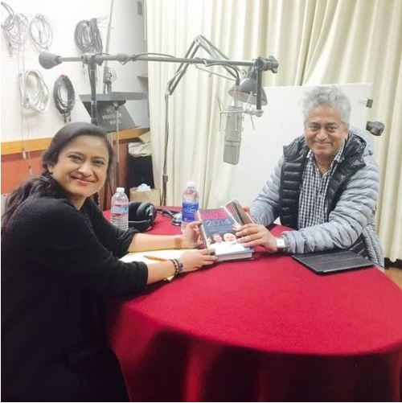

Interview with Journalist and Author Rajdeep Sardesai
In this Chaitime we talk to renowned Indian jornalist Rajdeep Sardesai about his book “2014: The Election that Changed India” as well as his opinion and ideas on various topics. This interview was recorded during Rajdeep’s visit to UC Berkeley.
Rajdeep Sardesai is a senior journalist with 26 years of journalistic experience in print and TV, Sardesai was managing editor of the NDTV network before he set up the IBN 18 network with channels like CNN IBN as founder editor. He began his career with the Times of India and was the city editor of its Mumbai edition at the age of 26. He is presently a consulting editor with the India Today Group and anchors a prime time show on India Today.
Specialising in national politics, Sardesai has won numerous awards for journalistic excellence including the prestigious Padma Shri for Journalism in 2008, the International Broadcasters Award for coverage of the 2002 Gujarat riots, and the Ramnath Goenka Excellence in Journalism Award for 2007. He has also won the Asian Television Awards 2014 for Best News Presenter in Asia for the coverage of the 2014 general elections. He has been News Anchor of the Year at the Indian Television Academy for eight of the last ten years and his programme Big Fight won the Asian TV award for best talk show twice in a row. He has been the President of the Editors Guild of India and was also chosen as a Global Leader for Tomorrow by the World Economic Forum in 2000. Sardesai writes a fortnightly column across several newspapers, including the Hindustan Times.
An Oxford blue at cricket, he completed his Masters and LLB from Oxford University after graduating in economics from St.Xavier’s College in Mumbai.